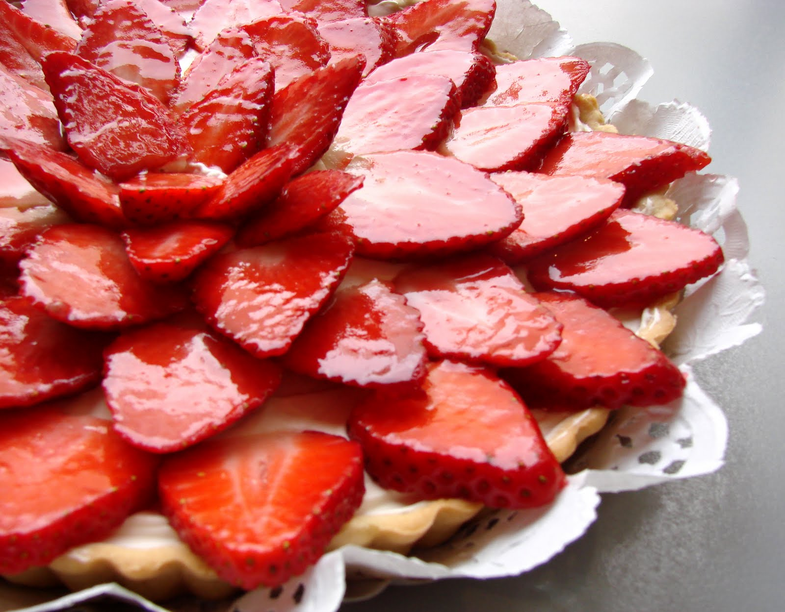

Cada vez que celebramos momentos importantes de nuestras vidas esta presente lo dulce, ya sea ese pequeño bombon que te dio alguien con significado especial o la torta que compraste para celebrar el cumpleaños de tu abuelita, sin saberlo, estamos rodeados de momentos dulces que hacen un recuerdo aún más memorable. Me imagino que todas tienen una historia en especial, por eso este espacio esta dedicado a todas las que quieran unirse a esta dulce aventura, así que toma ese batidor y un poco de azúcar que esto acaba de empezar.
|  |